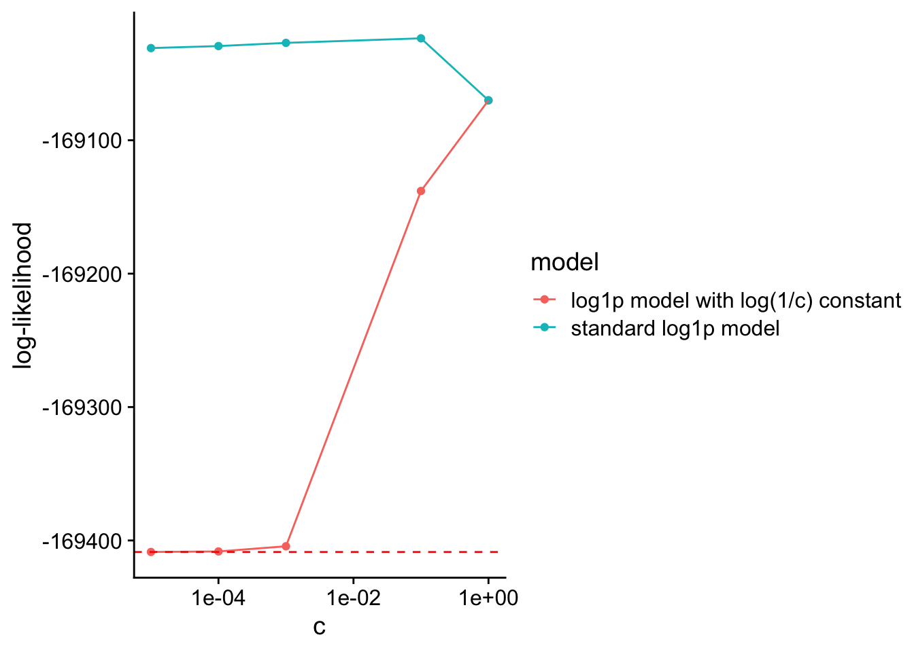

Connections Between Poisson Matrix Factorization Methods
2024-10-27
Last updated: 2024-10-31
Checks: 6 1
Knit directory: log1p_experiments/
This reproducible R Markdown analysis was created with workflowr (version 1.7.1). The Checks tab describes the reproducibility checks that were applied when the results were created. The Past versions tab lists the development history.
The R Markdown file has unstaged changes. To know which version of
the R Markdown file created these results, you’ll want to first commit
it to the Git repo. If you’re still working on the analysis, you can
ignore this warning. When you’re finished, you can run
wflow_publish to commit the R Markdown file and build the
HTML.
Great job! The global environment was empty. Objects defined in the global environment can affect the analysis in your R Markdown file in unknown ways. For reproduciblity it’s best to always run the code in an empty environment.
The command set.seed(20240402) was run prior to running
the code in the R Markdown file. Setting a seed ensures that any results
that rely on randomness, e.g. subsampling or permutations, are
reproducible.
Great job! Recording the operating system, R version, and package versions is critical for reproducibility.
Nice! There were no cached chunks for this analysis, so you can be confident that you successfully produced the results during this run.
Great job! Using relative paths to the files within your workflowr project makes it easier to run your code on other machines.
Great! You are using Git for version control. Tracking code development and connecting the code version to the results is critical for reproducibility.
The results in this page were generated with repository version 8edac00. See the Past versions tab to see a history of the changes made to the R Markdown and HTML files.
Note that you need to be careful to ensure that all relevant files for
the analysis have been committed to Git prior to generating the results
(you can use wflow_publish or
wflow_git_commit). workflowr only checks the R Markdown
file, but you know if there are other scripts or data files that it
depends on. Below is the status of the Git repository when the results
were generated:
Ignored files:
Ignored: .Rhistory
Unstaged changes:
Modified: analysis/model_connections.Rmd
Note that any generated files, e.g. HTML, png, CSS, etc., are not included in this status report because it is ok for generated content to have uncommitted changes.
These are the previous versions of the repository in which changes were
made to the R Markdown (analysis/model_connections.Rmd) and
HTML (docs/model_connections.html) files. If you’ve
configured a remote Git repository (see ?wflow_git_remote),
click on the hyperlinks in the table below to view the files as they
were in that past version.
| File | Version | Author | Date | Message |
|---|---|---|---|---|
| Rmd | 5f73c5d | Eric Weine | 2024-10-29 | added additional experiments for log1p model |
| html | 5f73c5d | Eric Weine | 2024-10-29 | added additional experiments for log1p model |
| Rmd | 507e752 | Eric Weine | 2024-10-28 | added empirical example for topic model |
| html | 507e752 | Eric Weine | 2024-10-28 | added empirical example for topic model |
| Rmd | 96f183e | Eric Weine | 2024-10-28 | added formal connection argument |
| html | 96f183e | Eric Weine | 2024-10-28 | added formal connection argument |
Three Different Models
Suppose that for \((i, j) \in \{1, \dots, n\} \times \{1, \dots, m\}\), \[y_{ij} \sim \textrm{Poisson}(\lambda_{ij}).\] The log-likelihood of this model is \[\sum_{i = 1}^{n}\sum_{j = 1}^{m} y_{ij} \log(\lambda_{ij}) - \lambda_{ij}.\]
Topic Model / Poisson NMF with Identity Link
Suppose that
\[\begin{align} y_{ij} &\sim \textrm{Poisson}(\lambda_{ij}) \\ \boldsymbol{\Lambda} &= \boldsymbol{L}\boldsymbol{F}^{T}, \end{align}\]
where \(\boldsymbol{L}\) and \(\boldsymbol{F}\) are both rank-K elementwise non-negative matrices. Define the log-likelihood of this model as
\[\ell_{TM}(\boldsymbol{L}, \boldsymbol{F}) = \sum_{i = 1}^{n}\sum_{j = 1}^{m} y_{ij} \log\left(\sum_{k = 1}^{K} \ell_{ik} f_{jk} \right) - \sum_{k = 1}^{K} \ell_{ik} f_{jk}.\]
GLM-PCA
Suppose that
\[\begin{align} y_{ij} &\sim \textrm{Poisson}(\lambda_{ij}) \\ \log(\lambda_{ij}) &= b_{ij} \\ \boldsymbol{B} &= \boldsymbol{L}\boldsymbol{F}^{T}, \end{align}\]
where \(\boldsymbol{L}\) and \(\boldsymbol{F}\) are both rank-K matrices. Define the log-likelihood of this model as
\[\ell_{GPCA}(\boldsymbol{L}, \boldsymbol{F}) = \sum_{i = 1}^{n}\sum_{j = 1}^{m} y_{ij} \left(\sum_{k = 1}^{K} \ell_{ik} f_{jk} \right) - \exp\left(\sum_{k = 1}^{K} \ell_{ik} f_{jk}\right).\]
Poisson NMF with log1p Link
Suppose that
\[\begin{align} y_{ij} &\sim \textrm{Poisson}(\lambda_{ij}) \\ \log\left(1 + \frac{\lambda_{ij}}c\right) &= b_{ij} \\ \boldsymbol{B} &= \boldsymbol{L}\boldsymbol{F}^{T}, \end{align}\]
where \(\boldsymbol{L}\) and \(\boldsymbol{F}\) are both rank-K elementwise non-negative matrices and \(c\) is a positive constant. Define the log-likelihood of this model as
\[\ell_{log1p}(\boldsymbol{L}, \boldsymbol{F}, c) = \sum_{i = 1}^{n}\sum_{j = 1}^{m} y_{ij} \log\left(c \cdot \exp\left\{ \sum_{k = 1}^{K} \ell_{ik} f_{jk} \right\} - c \right) - c \cdot \exp\left( \sum_{k = 1}^{K} \ell_{ik} f_{jk} \right) + c.\]
Unifying the Three Models
Suppose that we fix each value of \(\lambda_{ij}\) in the log1p model. Then, if we set \(c\) to be very large, then \(\frac{\lambda_{ij}}{c}\) will be small and thus \(\log\left(1 + \frac{\lambda_{ij}}{c}\right) \approx \frac{\lambda_{ij}}{c}\). Thus, when \(c\) is large we should expect that the log1p model should look like the topic model. Now, suppose that we set \(c\) to be a very small (positive) number. Then, \(\frac{\lambda_{ij}}{c}\) will be large and thus \(\log\left(1 + \frac{\lambda_{ij}}{c}\right) \approx \log\left(\frac{\lambda_{ij}}{c}\right).\) In this case, we should expect that the log1p model will act like GLM-PCA.
Connection of log1p Model to the Topic Model
Formally, we have
\[\lim_{c \rightarrow \infty} \ell_{log1p}\left(\frac{1}{\sqrt{c}}\boldsymbol{L}, \frac{1}{\sqrt{c}}\boldsymbol{F}, c\right) = \ell_{TM}(\boldsymbol{L}, \boldsymbol{F})\]
We prove this below:
First, note that
\[\begin{equation*} \ell_{log1p}\left(\frac{1}{\sqrt{c}}\boldsymbol{L}, \frac{1}{\sqrt{c}}\boldsymbol{F}, c\right) = \sum_{i = 1}^{n}\sum_{j = 1}^{m} y_{ij} \log\left(c \cdot \exp\left\{ \frac{1}{c} \sum_{k = 1}^{K} \ell_{ik} f_{jk} \right\} - c \right) - c \cdot \exp\left( \frac{1}{c} \sum_{k = 1}^{K} \ell_{ik} f_{jk} \right) + c \end{equation*}\]
Now, separating out the term that depends on \(c\) and taking the limit, we have
\[\begin{align*} \lim_{c \rightarrow \infty} c \cdot \exp\left\{ \frac{1}{c} \sum_{k = 1}^{K} \ell_{ik} f_{jk} \right\} - c &= \lim_{c \rightarrow \infty} c \cdot \left[ \exp\left\{ \frac{1}{c} \sum_{k = 1}^{K} \ell_{ik} f_{jk} \right\} - 1 \right] \end{align*}\]
Now, substitute in \(b_{ij} = \sum_{k = 1}^{K} \ell_{ik} f_{jk}\) and let \(x = \frac{b_{ij}}{c}\). Then, we can write
\[\lim_{c \rightarrow \infty} c \cdot \left[ \exp\left\{ \frac{1}{c} \sum_{k = 1}^{K} \ell_{ik} f_{jk} \right\} - 1 \right] = \lim_{x \rightarrow 0^{+}} \frac{b_{ij}}{x} (e^{x} - 1)\]
Now, recall that the Taylor series expansion of \(e^{x}\) about \(x = 0\) is
\[e^{x} = \sum_{n = 0}^{\infty} \frac{x^{n}}{n!} = 1 + x + \frac{x^{2}}{2!} + \frac{x^{3}}{3!} + \dots\] Thus, the Taylor series expansion of \(e^{x} - 1\) about \(x = 0\) is
\[e^{x} - 1 = \sum_{n = 1}^{\infty} \frac{x^{n}}{n!} = x + \frac{x^{2}}{2!} + \frac{x^{3}}{3!} + \dots\]
Now, we can write
\[\begin{align*} \lim_{x \rightarrow 0^{+}} \frac{b_{ij}}{x} (e^{x} - 1) &= \lim_{x \rightarrow 0^{+}} \frac{b_{ij}}{x} \left(x + \frac{x^{2}}{2!} + \frac{x^{3}}{3!} + \dots \right) \\ &= \lim_{x \rightarrow 0^{+}} \left(b_{ij} + \frac{b_{ij}x}{2!} + \frac{b_{ij} x^{2}}{3!} + \dots \right) \\ &= b_{ij}. \end{align*}\]
Substituting this back into the equation above, we have
\[\lim_{c \rightarrow \infty} c \cdot \left[ \exp\left\{ \frac{1}{c} \sum_{k = 1}^{K} \ell_{ik} f_{jk} \right\} - 1 \right] = \sum_{k = 1}^{K} \ell_{ik} f_{jk}.\]
Finally, substituting this back into the equation for \(\ell_{log1p}\), we have
\[\lim_{c \rightarrow \infty} \ell_{log1p}\left(\frac{1}{\sqrt{c}}\boldsymbol{L}, \frac{1}{\sqrt{c}}\boldsymbol{F}, c\right) = \sum_{i = 1}^{n}\sum_{j = 1}^{m} y_{ij} \log\left(\sum_{k = 1}^{K} \ell_{ik} f_{jk} \right) - \sum_{k = 1}^{K} \ell_{ik} f_{jk} = \ell_{TM}(\boldsymbol{L}, \boldsymbol{F})\]
Connection of log1p Model to GLM-PCA
To make the connection with GLM-PCA explicit, we have to slightly modify the log1p model. Specifically, we now take
\[\begin{align} y_{ij} &\sim \textrm{Poisson}(\lambda_{ij}) \\ \log\left(1 + \frac{\lambda_{ij}}c\right) &= \alpha + b_{ij} \\ \boldsymbol{B} &= \boldsymbol{L}\boldsymbol{F}^{T}, \end{align}\]
where the variables are defined as above except for \(\alpha\), which is a positive constant. We can write the log-likelihood of this model as
\[\ell_{log1p_\alpha}(\boldsymbol{L}, \boldsymbol{F}, c, \alpha) = \sum_{i = 1}^{n}\sum_{j = 1}^{m} y_{ij} \log\left(c \cdot \exp\left\{ \alpha + \sum_{k = 1}^{K} \ell_{ik} f_{jk} \right\} - c \right) - c \cdot \exp\left( \alpha + \sum_{k = 1}^{K} \ell_{ik} f_{jk} \right) + c.\] Now, formally we will prove that
\[\lim_{c \rightarrow 0^{+}} \ell_{log1p_\alpha}\left(\boldsymbol{L}, \boldsymbol{F}, c, \log(1/c) \right) = \ell_{GPCA}(\boldsymbol{L}, \boldsymbol{F}).\]
First, we can write
\[\ell_{log1p_\alpha}(\boldsymbol{L}, \boldsymbol{F}, c, \log(1/c)) = \sum_{i = 1}^{n}\sum_{j = 1}^{m} y_{ij} \log\left(c \cdot \exp\left\{ \log(1/c) + \sum_{k = 1}^{K} \ell_{ik} f_{jk} \right\} - c \right) - c \cdot \exp\left( \log(1/c) + \sum_{k = 1}^{K} \ell_{ik} f_{jk} \right) + c.\]
Now, observe that
\[\begin{align*} \lim_{c \rightarrow 0^{+}} c [\exp\{\log(1 / c) + x\} - 1] &= \lim_{c \rightarrow 0^{+}} c [\exp\{\log(1 / c)\}\exp(x) - 1] \\ &= \lim_{c \rightarrow 0^{+}} c \frac{1}{c} \exp(x) - c \\ &= \exp(x). \end{align*}\]
Plugging this relationship back into the equation for the log-likelihood, we have
\[\lim_{c \rightarrow 0^{+}} \ell_{log1p_\alpha}(\boldsymbol{L}, \boldsymbol{F}, c, \log(1/c)) = \sum_{i = 1}^{n}\sum_{j = 1}^{m} y_{ij} \left(\sum_{k = 1}^{K} \ell_{ik} f_{jk} \right) - \exp\left(\sum_{k = 1}^{K} \ell_{ik} f_{jk}\right) = \ell_{GPCA}(\boldsymbol{L}, \boldsymbol{F}).\]
Experiments
Below, I investigate empirically if larger values of \(c\) allow the log1p model to
converge to either the topic model or GLMPCA.
First, I generate data from a rank-4 topic model and ran the
log1p model until convergence with increasing values of
\(c\). The dashed red line below
represents the log-likelihood of the topic model obtained via
fastTopics.
set.seed(1)
n <- 500
p <- 250
K <- 4
library(distr)
library(Matrix)
l_dist <- UnivarMixingDistribution(
Unif(0,0.05),
Exp(rate = 1.75),
mixCoeff = rep(1/2,2)
)
f_dist <- UnivarMixingDistribution(
Unif(0,0.05),
Exp(rate = 1.75),
mixCoeff = rep(1/2,2)
)
l_sampler <- distr::r(l_dist)
f_sampler <- distr::r(f_dist)
LL <- matrix(
data = l_sampler(n = n * K),
nrow = n,
ncol = K
)
FF <- matrix(
data = f_sampler(n = p * K),
nrow = p,
ncol = K
)
Lambda <- LL %*% t(FF)
Y <- matrix(
data = rpois(n = prod(dim(Lambda)), lambda = as.vector(Lambda)),
nrow = n,
ncol = p
)
Y_dense <- Y
Y <- as(Y, "CsparseMatrix")
c_vec <- c(
0.01, 0.1, 0.25, 0.5, 0.75, 1, 2.5,
5, 7.5, 10, 25, 50, 75, 100, 250,
500, 750, 1000, 2500, 5000, 7500, 10000
)
ll_vec <- numeric(length(c_vec))
for (i in 1:length(c_vec)) {
set.seed(1)
log1p <- passPCA::fit_factor_model_log1p_exact(
Y = Y,
K = 4,
maxiter = 10000,
s = rep(c_vec[i], n)
)
H <- exp(log1p$U %*% t(log1p$V)) - 1
ll_vec[i] <- sum(
dpois(
x = as.vector(Y_dense),
lambda = c_vec[i] * as.vector(H),
log = TRUE
)
)
}
library(fastTopics)
set.seed(1)
tm <- fit_poisson_nmf(
X = Y, k = 4,
numiter = 1000
)
ll_tm <- sum(
dpois(
x = as.vector(Y_dense),
lambda = as.vector(tm$L %*% t(tm$F)),
log = TRUE
)
)
| Version | Author | Date |
|---|---|---|
| 507e752 | Eric Weine | 2024-10-28 |
Next, I generated data from a rank-4 GLM-PCA model (with non-negative
\(\boldsymbol{L}\) and \(\boldsymbol{F}\)) and ran the
log1p model until convergence with increasing values of
\(c\) (without any computational
approximation). The dashed red line below represents the log-likelihood
of the GLM-PCA model obtained via fastglmpca.
set.seed(1)
n <- 500
p <- 250
K <- 4
library(distr)
library(Matrix)
l_dist <- UnivarMixingDistribution(
Dirac(0),
Exp(rate = 3),
mixCoeff = rep(1/2,2)
)
f_dist <- UnivarMixingDistribution(
Dirac(0),
Exp(rate = 3),
mixCoeff = rep(1/2,2)
)
l_sampler <- distr::r(l_dist)
f_sampler <- distr::r(f_dist)
LL <- matrix(
data = l_sampler(n = n * K),
nrow = n,
ncol = K
)
FF <- matrix(
data = f_sampler(n = p * K),
nrow = p,
ncol = K
)
Lambda <- exp(LL %*% t(FF))
Y <- matrix(
data = rpois(n = prod(dim(Lambda)), lambda = as.vector(Lambda)),
nrow = n,
ncol = p
)
Y_dense <- Y
Y <- as(Y, "CsparseMatrix")
library(fastglmpca)
set.seed(1)
glmpca_init <- init_glmpca_pois(
col_size_factor = FALSE,
row_intercept = FALSE,
Y = Y,
K = 4
)
glmpca_fit <- fit_glmpca_pois(
Y = Y,
fit0 = glmpca_init
)
c_vec <- c(
0.001, 0.01, 0.1, 0.25, 0.5, 0.75, 1, 2.5,
5, 7.5, 10, 25, 50, 75, 100, 250,
500, 750, 1000, 2500, 5000, 7500, 10000
)
ll_vec <- numeric(length(c_vec))
for (i in 1:length(c_vec)) {
set.seed(1)
log1p <- passPCA::fit_factor_model_log1p_exact(
Y = Y,
K = 4,
maxiter = 100000,
s = rep(c_vec[i], n)
)
H <- exp(log1p$U %*% t(log1p$V)) - 1
ll_vec[i] <- sum(
dpois(
x = as.vector(Y_dense),
lambda = c_vec[i] * as.vector(H),
log = TRUE
)
)
}
out_df <- data.frame(
c = c_vec,
ll = ll_vec
)
out_list <- list(
df = out_df,
glmpca_ll = glmpca_fit$loglik
)
| Version | Author | Date |
|---|---|---|
| 5f73c5d | Eric Weine | 2024-10-29 |
This trend is as expected. The gap between the best log-likelihood
from the log1p model and the GLM-PCA model is
probably because we actually need to add a constant to the
log1p model for the log-likelihoods from the two models to
be equal.
Adding a constant to the log1p model
For a fixed value of \(c\), I will fit the model
\[\begin{align} y_{ij} &\sim \textrm{Poisson}(\lambda_{ij}) \\ \log\left(1 + \frac{\lambda_{ij}}c\right) &= \log(1/c) + b_{ij} \\ \boldsymbol{B} &= \boldsymbol{L}\boldsymbol{F}^{T}, \end{align}\]
in an attempt to establish the connection between GLM-PCA and the log1p model.
A simple calculation shows that this is equivalent to fitting the model
\[\begin{align} y_{ij} &\sim \textrm{Poisson}(\lambda_{ij}) \\ \log\left(\lambda_{ij} + c\right) &= b_{ij} \\ \boldsymbol{B} &= \boldsymbol{L}\boldsymbol{F}^{T}. \end{align}\]
set.seed(10)
n <- 500
p <- 250
K <- 4
library(distr)
library(Matrix)
#library(MatrixExtra)
l_dist <- UnivarMixingDistribution(
Dirac(0),
Exp(rate = 3),
mixCoeff = rep(1/2,2)
)
f_dist <- UnivarMixingDistribution(
Dirac(0),
Exp(rate = 3),
mixCoeff = rep(1/2,2)
)
l_sampler <- distr::r(l_dist)
f_sampler <- distr::r(f_dist)
LL <- matrix(
data = l_sampler(n = n * K),
nrow = n,
ncol = K
)
FF <- matrix(
data = f_sampler(n = p * K),
nrow = p,
ncol = K
)
Lambda <- exp(LL %*% t(FF))
Y <- matrix(
data = rpois(n = prod(dim(Lambda)), lambda = as.vector(Lambda)),
nrow = n,
ncol = p
)
Y_dense <- Y
Y <- as(Y, "CsparseMatrix")
ll_const <- sum(lfactorial(Y_dense))
cc_vec <- c()
ll_vec <- c()
ll2_vec <- c()
for (cc in c(1e-5, 1e-4, 1e-3, 1e-1, 1)) {
cc_vec <- c(cc_vec, cc)
set.seed(1)
log1p_alpha <- passPCA:::fit_factor_model_log1p_exact_add_const(
Y = Y,
K = 4,
maxiter = 10000,
cc = cc
)
H_alpha <- exp(log1p_alpha$U %*% t(log1p_alpha$V)) - cc
ll <- sum(
dpois(
x = as.vector(Y_dense),
lambda = as.vector(H_alpha),
log = TRUE
)
)
ll_vec <- c(ll_vec, ll)
set.seed(1)
log1p <- passPCA::fit_factor_model_log1p_exact(
Y = Y,
K = 4,
maxiter = 100000,
s = rep(cc, n)
)
H <- exp(log1p$U %*% t(log1p$V)) - 1
ll2 <- sum(
dpois(
x = as.vector(Y_dense),
lambda = cc * as.vector(H),
log = TRUE
)
)
ll2_vec <- c(ll2_vec, ll2)
}
res_df <- data.frame(
cc = cc_vec,
ll_add_const = ll_vec,
ll_no_const = ll2_vec
)
library(fastglmpca)
set.seed(1)
glmpca_init <- init_glmpca_pois(
col_size_factor = FALSE,
row_intercept = FALSE,
Y = Y,
K = 4
)
glmpca_fit <- fit_glmpca_pois(
Y = Y,
fit0 = glmpca_init
)
add_const_res <- list(
df = res_df,
glmpca_ll = glmpca_fit$loglik
)add_const_res <- readr::read_rds("~/Documents/data/passPCA/experiment_results/add_const_res.rds")
df_plot <- data.frame(
ll = c(
add_const_res$df$ll_no_const, add_const_res$df$ll_add_const
),
model = c(
rep("log1p model with log(1/c) constant", nrow(add_const_res$df)),
rep("standard log1p model", nrow(add_const_res$df))
),
cc = rep(add_const_res$df$cc, 2)
)
ggplot(data = df_plot) +
geom_point(aes(x = cc, y = ll, color = model), size = 1.5) +
geom_line(aes(x = cc, y = ll, color = model)) +
scale_x_log10() +
ylab("log-likelihood") +
geom_hline(yintercept = add_const_res$glmpca_ll, color = "red", linetype = "dashed") +
cowplot::theme_cowplot() +
xlab("c")
sessionInfo()R version 4.4.0 (2024-04-24)
Platform: aarch64-apple-darwin20
Running under: macOS Ventura 13.5
Matrix products: default
BLAS: /Library/Frameworks/R.framework/Versions/4.4-arm64/Resources/lib/libRblas.0.dylib
LAPACK: /Library/Frameworks/R.framework/Versions/4.4-arm64/Resources/lib/libRlapack.dylib; LAPACK version 3.12.0
locale:
[1] en_US.UTF-8/en_US.UTF-8/en_US.UTF-8/C/en_US.UTF-8/en_US.UTF-8
time zone: America/New_York
tzcode source: internal
attached base packages:
[1] stats graphics grDevices utils datasets methods base
other attached packages:
[1] ggplot2_3.5.1
loaded via a namespace (and not attached):
[1] gtable_0.3.5 jsonlite_1.8.8 highr_0.11 dplyr_1.1.4
[5] compiler_4.4.0 promises_1.3.0 tidyselect_1.2.1 Rcpp_1.0.13
[9] stringr_1.5.1 git2r_0.33.0 later_1.3.2 jquerylib_0.1.4
[13] scales_1.3.0 yaml_2.3.8 fastmap_1.2.0 readr_2.1.5
[17] R6_2.5.1 labeling_0.4.3 generics_0.1.3 workflowr_1.7.1
[21] knitr_1.47 tibble_3.2.1 munsell_0.5.1 rprojroot_2.0.4
[25] bslib_0.7.0 pillar_1.9.0 tzdb_0.4.0 rlang_1.1.4
[29] utf8_1.2.4 cachem_1.1.0 stringi_1.8.4 httpuv_1.6.15
[33] xfun_0.45 fs_1.6.4 sass_0.4.9 cli_3.6.3
[37] withr_3.0.0 magrittr_2.0.3 grid_4.4.0 digest_0.6.36
[41] rstudioapi_0.16.0 hms_1.1.3 cowplot_1.1.3 lifecycle_1.0.4
[45] vctrs_0.6.5 evaluate_0.24.0 glue_1.7.0 farver_2.1.2
[49] whisker_0.4.1 colorspace_2.1-0 fansi_1.0.6 rmarkdown_2.27
[53] tools_4.4.0 pkgconfig_2.0.3 htmltools_0.5.8.1